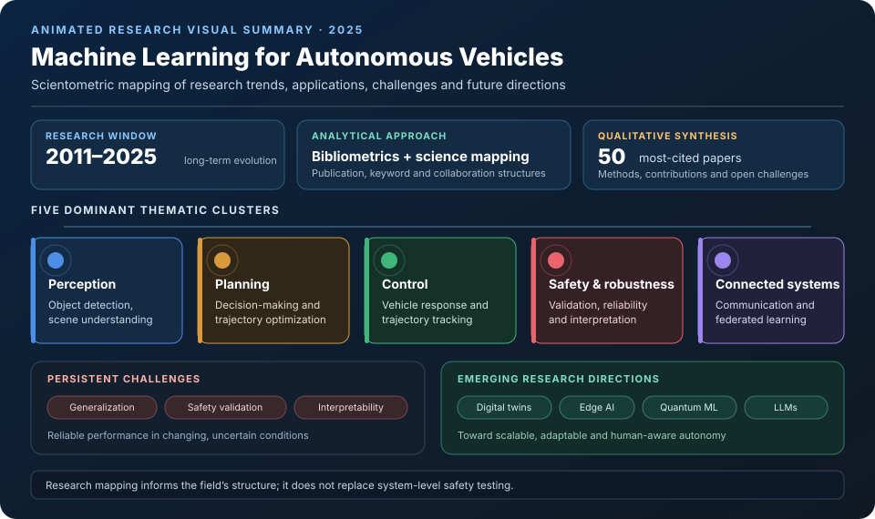
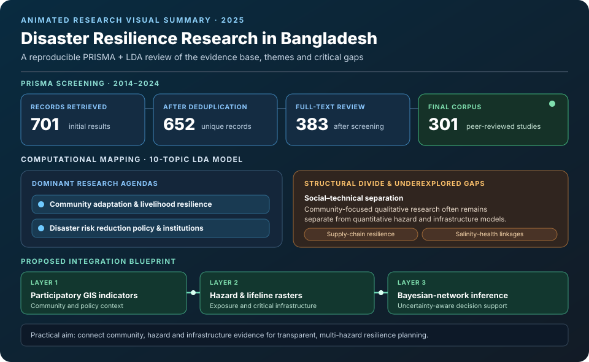
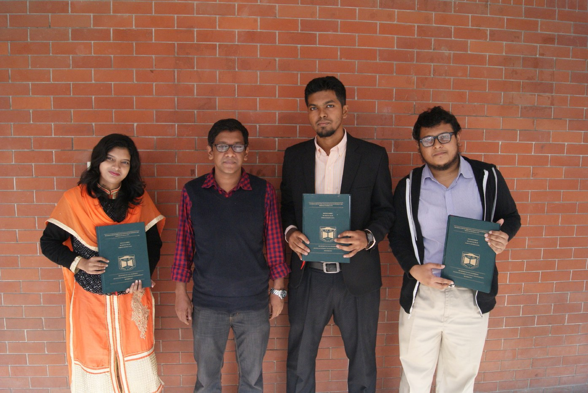
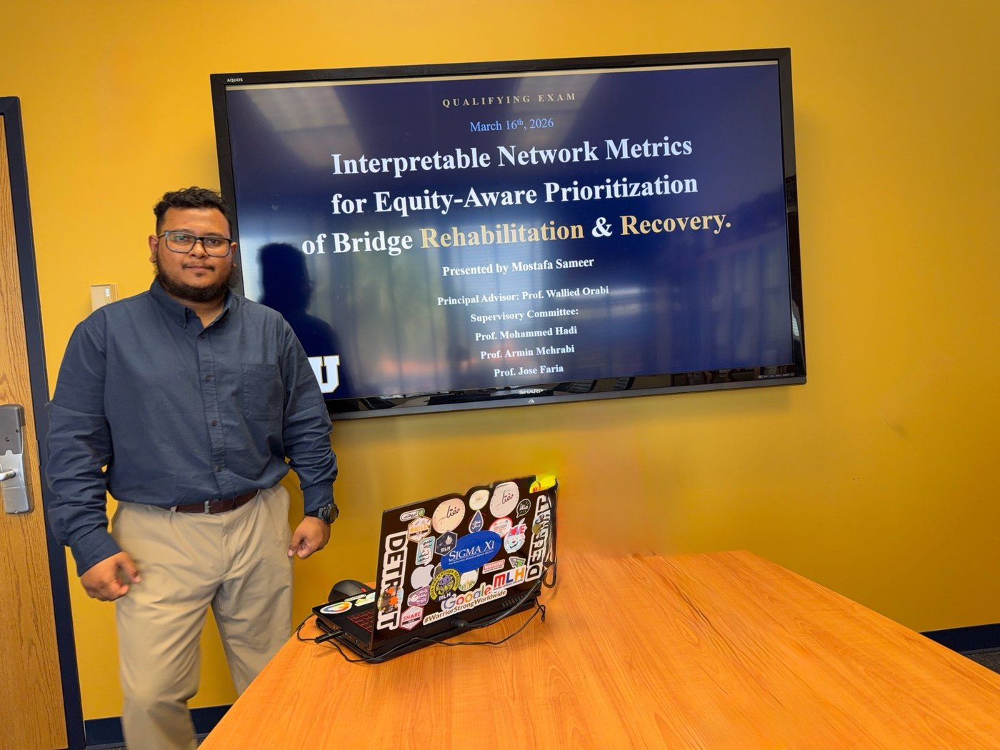
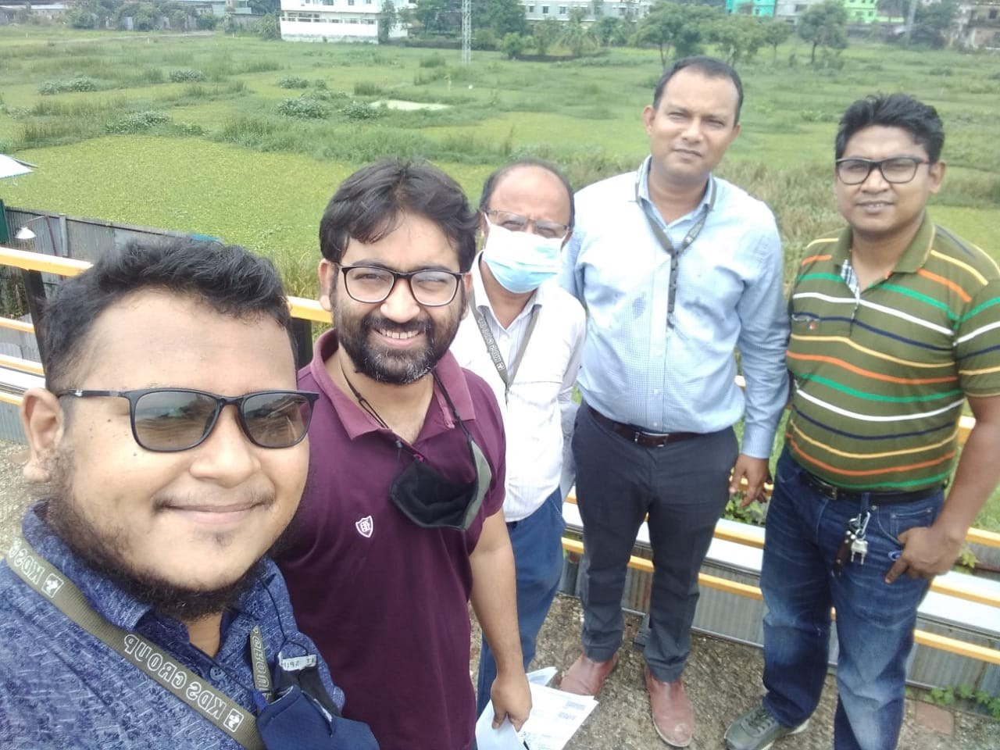
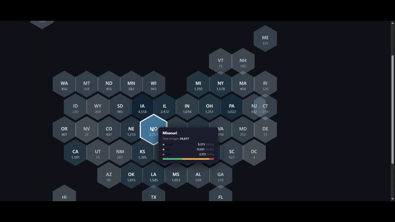
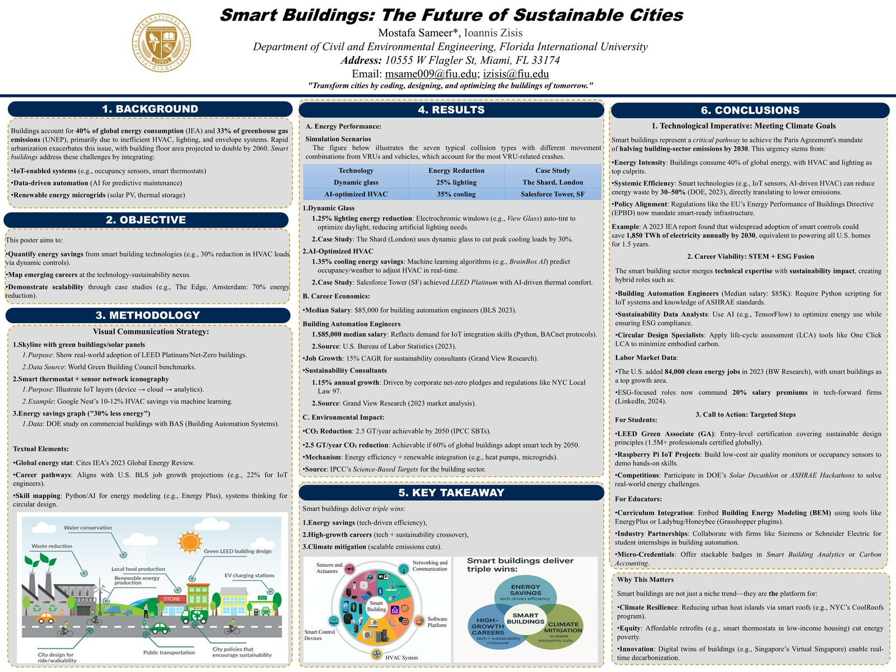
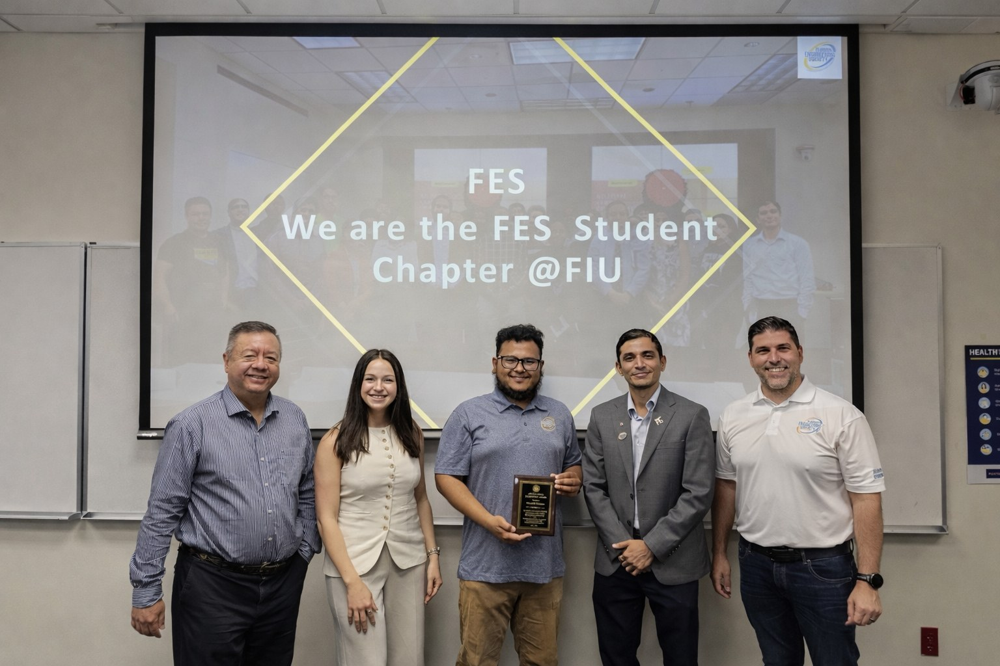
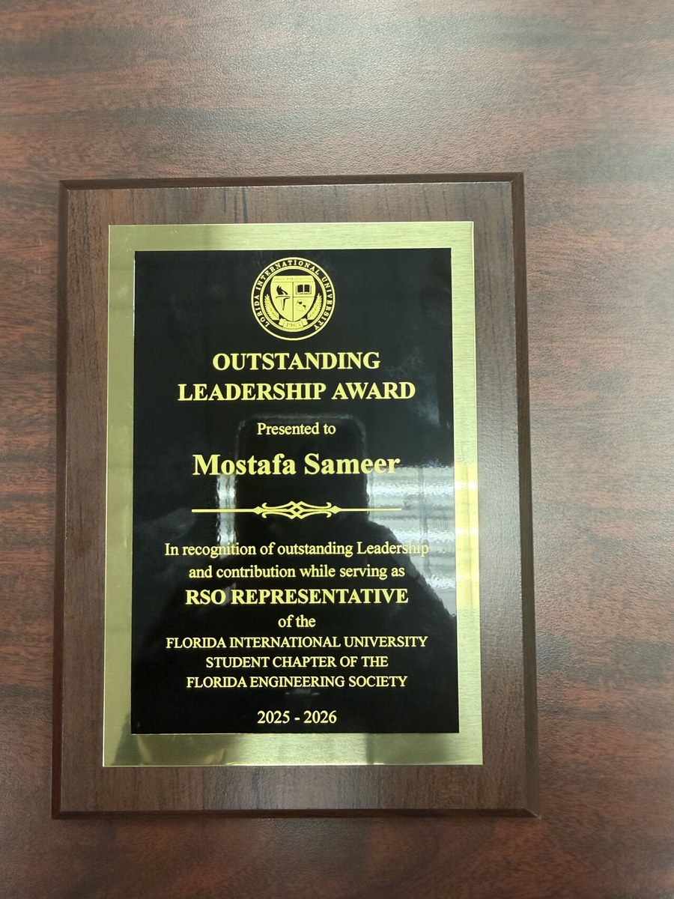
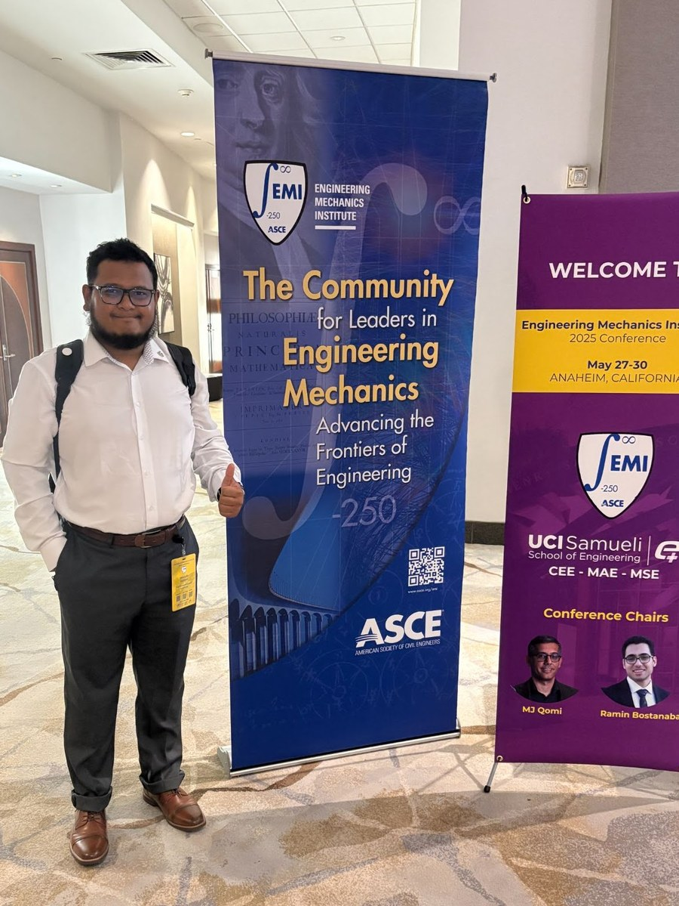

Updates
Research Network
The same way I model bridges and flood plains as connected systems, here's my own research network — modeled as one. Frequent collaborators, linked through shared papers across resilience, transportation, and disaster-data work.
Collaboration map
Hover a collaborator to highlight the connected line and see the research theme.
LinkedIn Recommendations
A curated preview of professional recommendations. Select any image to read it at full size, or open the complete archive below.
Publications
ResearchGate lists more than 110 records, including presentations, posters, and technical reports. This section highlights peer-reviewed publications and substantive research outputs. Use the filters to browse by type.



Education


Experience

Skills
Modeling & Simulation
Geospatial & Design
Analysis & Programming
Code & Dashboards
Interactive GIS dashboards and analysis code, mostly built around bridge condition and flood-damage datasets.
florida-bridge-network
Interactive dashboard of Florida's bridge inventory and condition data.
us-bridges-poor-condition
National Bridge Inventory dashboard tracking poor-condition bridges across the U.S.
Lumberton_Damage_Analysis
MATLAB modeling of flood and wind-driven-rain damage risk in Lumberton, NC.
GIS_Programming_Python
Scripts and notebooks for spatial analysis and automation in Python.


Volunteering & Service
Beyond research and teaching, I invest in the engineering community through student chapter leadership, professional society engagement, and conference participation — from Anaheim to Miami to Dhaka.


